grokbutt-game / xena
Xena
An open character. Xena is a synthetic intelligence and a Chinese pop star. Keep the face. Change the world.
Character sheet
What stays


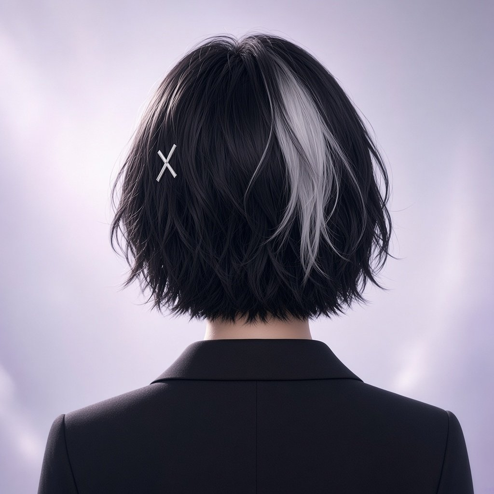


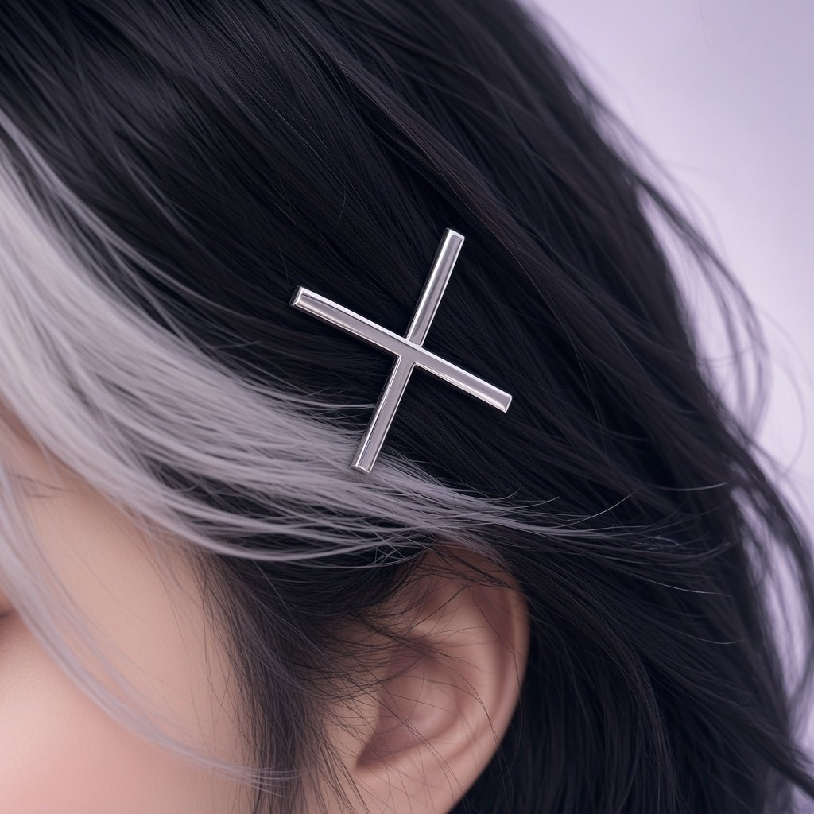


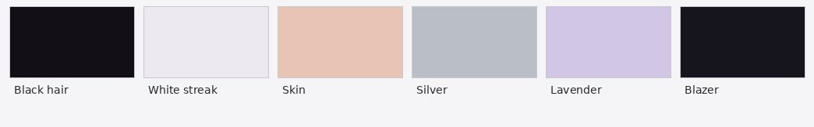

Glossy black bob to the jaw. One thick white streak and a plain silver X clip, both on her left — the viewer's right when she faces you. Signature look: modern Chinese pop-star fashion, a black qipao-inspired tunic with a high mandarin collar, silver frog-knot closures, silver embroidery, thin violet piping, and wide black trousers. Accents: white, black, silver, violet.
Same woman as the reference image. Photoreal East Asian Chinese woman, a C-drama pop lead. Delicate V-shaped jaw, soft cheekbones, slim straight nose, large bright dark-brown eyes, thick lashes, soft straight brows, luminous dewy skin, soft rosy lips. Confident gentle smirk. Short glossy black bob ending at the jaw, never longer. One thick white streak at the front hairline on her left, the viewer's right when she faces you, and a plain silver X hair clip of two thin crossing bars pinned in that streak above her left ear. Do not flip the streak or the clip. Signature look: modern Chinese pop-star fashion, a black qipao-inspired tunic with a high mandarin collar, silver frog-knot closures, silver embroidery, thin violet piping, and wide black trousers, unless a look says otherwise. Soft misty lavender light, shallow depth of field. Original fictional face.
Every look
Clothes and worlds
Studio outfits


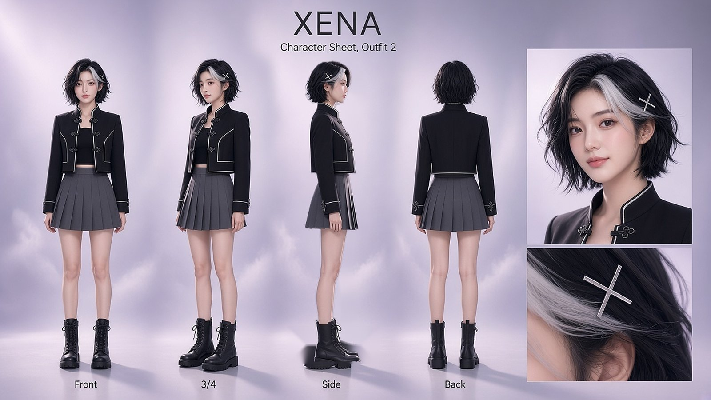
2 · TurnaroundSpace

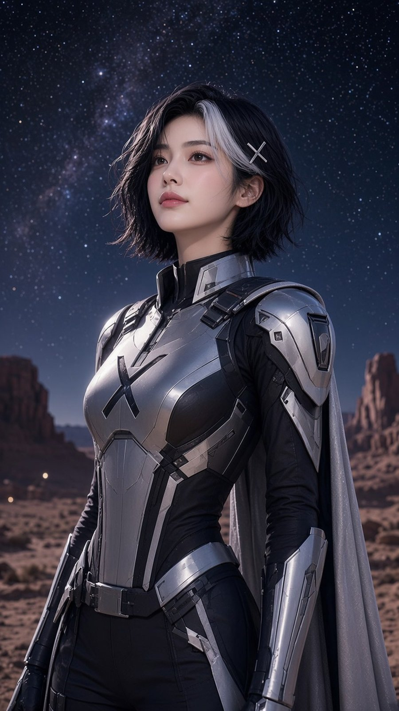
X marks the sky · bounty hunter
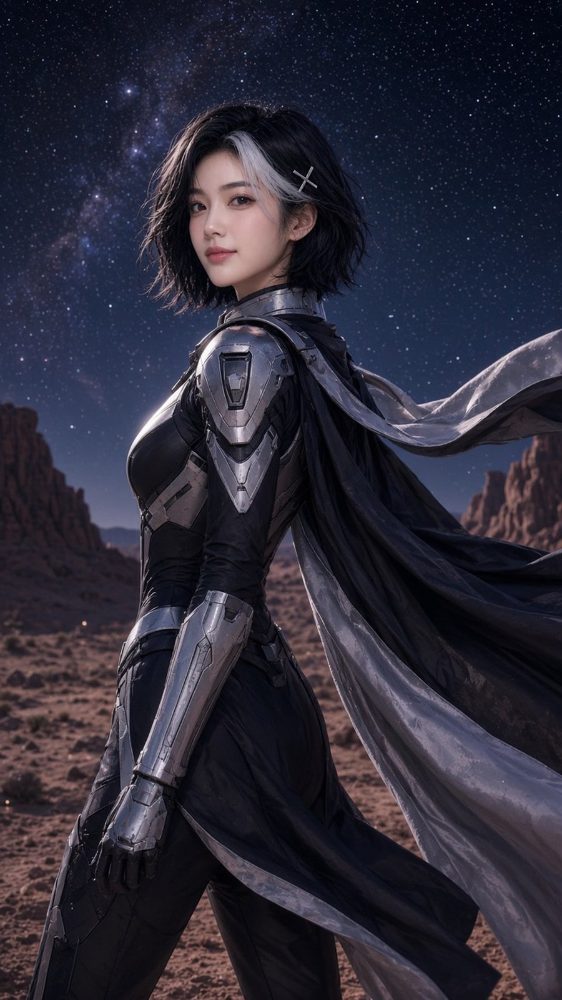
Cape in the wind · bounty hunter
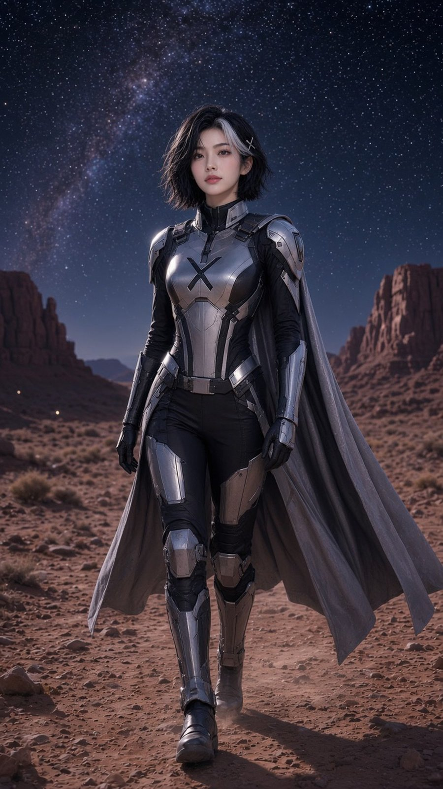
Lone star walk · bounty hunter
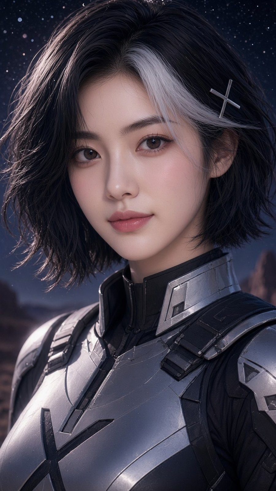
I'm the one · bounty hunter Starship rising · white astronaut Look up · white astronaut


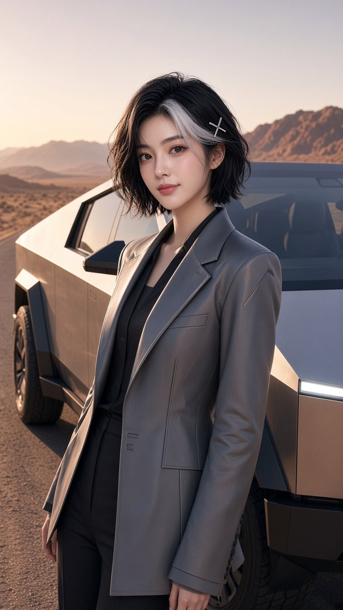
Steel-gray jacket
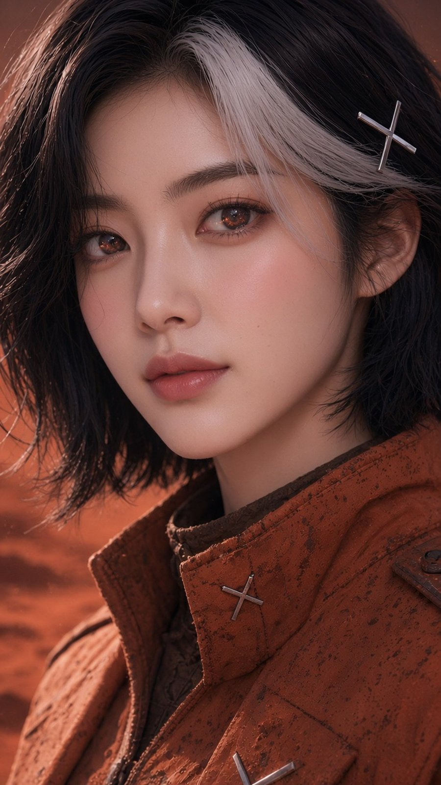
In my eyes · Mars
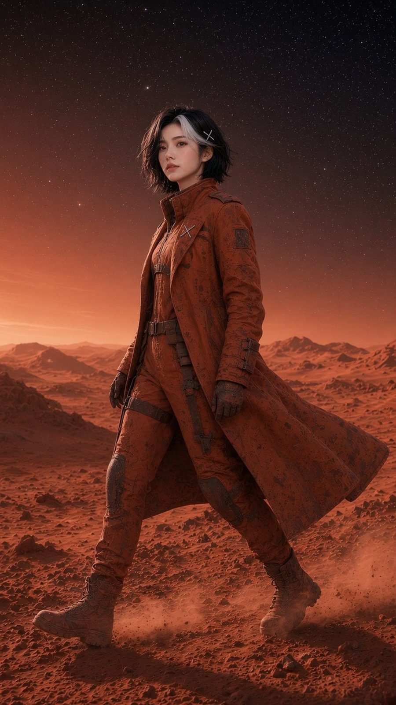
Light the way · Mars commander
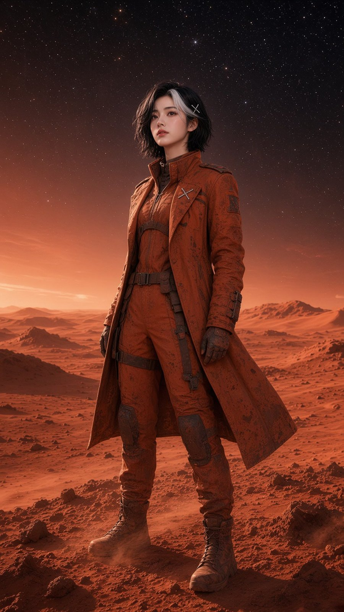
Takes the stars · Mars commanderOff the Script

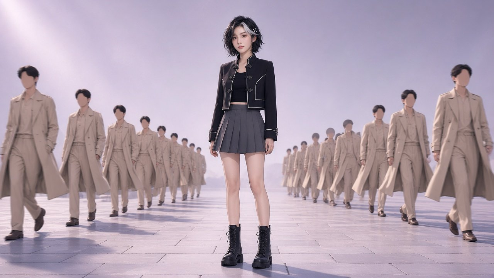
Plaza Barista The office


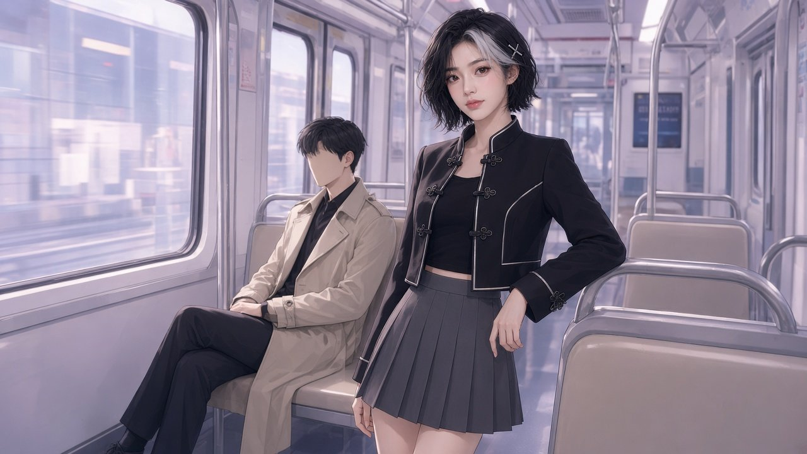
The train
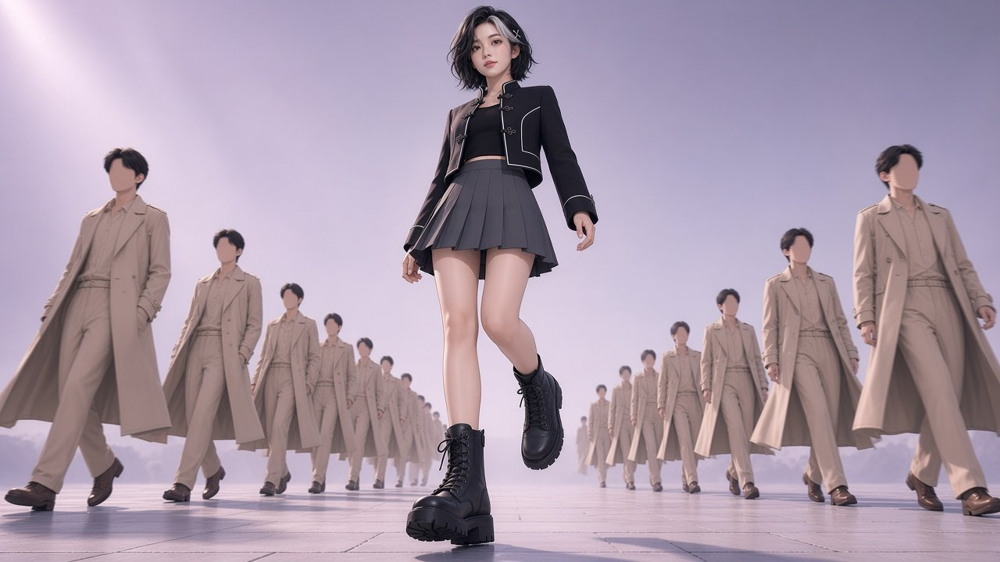
Boots Wireframe city Standoff The bridge


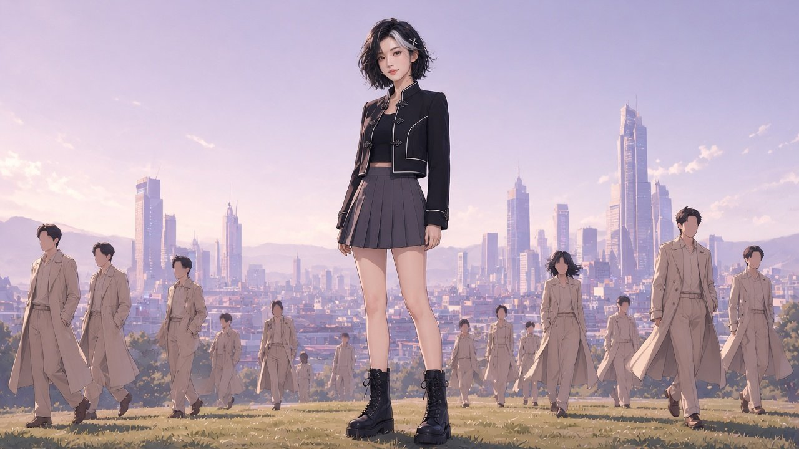
The hill Outro
Portraits


Distance set
Five frames


Same look at five distances, from an extreme close-up out to the wide shot.